CSE 8803: Applied Natural Language Processing
Table of Contents
- 1. Week 1: Text data preprocessing + Course Intro
- 2. Week 2: (Discrete) Text Representations
- 3. Week 3: Linear Text Classification
- 4. Week 5: Log Regression, SVM and Perceptron (Module 4)
- 4.1. Logistic Regression
- 4.1.1. Generative vs Discriminative Models (again)
- 4.1.2. Bayes equation again
- 4.1.3. Logistic Function for posterior probability
- 4.1.4. Sigmoid is interpreted as probability
- 4.1.5. Logistic regression model
- 4.1.6. The gradient of \(l(\theta)\)
- 4.1.7. Gradient descent
- 4.1.8. Gradient ascent (concave) / descent (convex) algorithm
- 4.1.9. Advantages and disadvantages of logistic regression
- 4.2. Support vector machine
- 4.3. Perceptron
- 4.1. Logistic Regression
- 5. Week 6: Embeddings/Dimensionality reduction
- 5.1. SVD and Co-occurrence Embeddings
- 5.1.1. Motivating example
- 5.1.2. Bag of words representation
- 5.1.3. What is dimensionality reduction?
- 5.1.4. Intuition (of PCA)
- 5.1.5. Singular value decomposition
- 5.1.6. Co-occurrence matrices
- 5.1.7. SVD on co-occurrence matrices
- 5.1.8. Dense word embeddings
- 5.1.9. Advantages of dense word embeddings
- 5.2. GloVe
- 5.1. SVD and Co-occurrence Embeddings
- 6. Week 8: Neural Networks and Word2Vec
1. Week 1: Text data preprocessing + Course Intro
1.1. Why ANLP?
- Text and docs are everywhere
- Hundreds of languages in the world
- Primary information artifacts
- Large volumes of textual data
- Big and small companies looking for this skill
1.2. Lots of text and written information
- Internet
- Webpages, Facebook, Wikipedia, etc.
- Digital libraries: Google Books, ACM, IEEE
- Lyrics, subtitles, etc.
- Police case reports
- Legislation
- Reviews
- Medical reports
- Job descriptions
1.3. Example applications of NLP
- Establish authenticity, detect plagiarism
- Classification of genres
- Classification of tone; sentiment analysis
- Syntax analysis in code
- Machine translation
1.4. Challenges of NLP
- Interdisciplinary field
- Ambiguity at many levels of language:
- Lexical (Word level)
- Syntactic: different ways of parsing
- Partial information: e.g., how to interpret pronouns
- Contextual information: context of sentence may affect meaning of sentence
1.5. Class overview
- Preprocessing:
- Clean text and documents
- Tokenization
- Reducing inflectional forms of a word:
- Stemming
- Lemmatization
- Normalization
- Text representation
- One hot encoding
- Bag of words (Frequency counting)
- Term frequency-Inverse document frequency (TF-IDF)
- Embeddings
- Overview of classification methods
- Naive Bayes
- Logistic regression
- SVM
- Perceptron
- Nerual Network
- Overview of Deep Learning
- Convolutional neural network
- Recurrent neural network
- Long short-term memory
- Overview of topic modelling
- Principal component analysis
- Singular value decomposition
- Latent Dirichlet Allocation
- Overview of Transformer methods
- Bidirectional Encoder Representations from Transformers
- Generative Pre-trained Transformers (GPT)
1.6. Deliverables
1.6.1. Homework
- HW1: Text preprocessing and classification intro
- HW2: Classification methods, dimensionality reduction, SVD
- HW3: Deep learning
- HW4: Transformers and unsupervised methods
1.6.2. Quizzes (10)
- Measure understanding of topic
- Mostly conceptual questions
- MCQ
- Limited time to do the test
- Mandatory
1.7. Course goals
- Demonstrate how to pre-process textual data
- Differentiate text representation methods and techniques
- Explain different NLP tasks
- Develop and assess performance of different NLP models using a variety of techniques
1.8. Text Preprocessing Techniques
1.8.1. Terminology
- Corpus
- collection of text, e.g. Yelp reviews, Wikipedia articles
- Syntax
- Grammatical structure of text
- Syntactic parsing
- process of analyzing natural language with grammatical rules
- Semantics
- meaning of text
- Tokenization
- splitting long pieces of text into smaller pieces (tokens). e.g.:
This is a simple sentence->["This", "is", "a", "simple", "sentence"] - Stop words
- commonly used words, e.g. "the", "a", "an", "is", "are". Do not contribute to overall meaning
- N-grams
- consecutive sequence of words (commonly: 2-5) in a text. 1-gram (unigram), 2-gram (bigram), 3-gram (trigram). Example of bigrams:
"This is", "is a", "a simple", "simple sentence"
1.8.2. Preprocessing text data
- Text is unstructured, so preprocessing is the first step to prepare and clean text data to perform a NLP task
- Useful libraries:
- re: regular expressions
- nltk: natural language toolkit
- Common steps:
- Noise removal
- Tokenization
- Text normalization
1.8.3. Noise removal
Removal of unwanted text formatting information, e.g.:
- Punctuation
- Accent marks
- Special characters
- Numeric digits (could be replaced with words)
- Leading, ending and vertical whitespace
- HTML formatting
Example: This is a 'simple'' sentence !!! 1+ \n -> This is a simple sentence
1.8.4. Tokenization
Example:
This is a simple sentence ->
['This', 'is', 'a', 'simple', 'sentence', '.']
1.8.5. Text normalization
Removing variations in the text to bring it to a standard form.
- Case: Convert all letters to upper or lower case
- Removing stop words, sparse terms, other special / particular words.
Example of text normalization:
This is a Simple SenTence ->
simple sentence
- Stemming: reduce words to word stem, base, or root form.
Example:
There are several tytpes of stemming algorithms->there are sever type fo stem algorithms. - Lemmatization: similar to stemming. Reduces inflectional forms to a common base form, the lemma. Does not simply chop off inflections. Uses lexical knowledge to get the correct base form of words.
Example:
There are several tytpes of stemming algorithms->There are several type of stemming algorithms.
2. Week 2: (Discrete) Text Representations
2.1. Why?
- NLP
- design algorithms to allow computers to understand natural language, so as to perform some task
- Required
- convert text data to numerical data that can be used in model
2.2. Representing Words
- Can be represented by vectors of 0 & 1 where 1 indicates the position of the word, e.g. lorem =
[1, 0], ipsum =[0, 1], etc.
2.3. Representing sentences/documents
- Vectors of vectors eg
[[1,0], [0,1]]
2.4. One Hot Encoding
2.4.1. Definitions
- corpus
- all texts
- vocabulary, V
- all unique words
- vocabulary size, d
- number of unique words, "dimensions"
- word, w
- represented by vector \(X\)
\(X^w_i\) = 1 if idw(w) = 1, 0 otherwise
- document
- represented by matrix sized \(n \times d\)
- n
- number of words in document
- d
- a single vector with multiple values of 1 where vocab. words are present
- Document, D
- e.g. this is a sentence
- Vocabulary, V
- e.g.
[aardvark, ..., sentence, ..., zither] - OHE, \(X^D\)
[0, ..., 1, ...1]
2.4.2. Advantages and disadvantages
- Advantages: easy to implement
- Disadvantages:
- not scalable for large vocabulary
- high dimensional sparse matrix results in expensive memory + computation
each word represented individually, hence no notion of similarity or meaning. All vectors are orthogonal
\((w^{good})^T \cdot w^{great} = (w^{good})^T \cdot w^{bad} = 0\)
2.5. Bag of Words (Frequency Counting)
- Summary
- Represents each document as a bag of words. Ignores order of words.
- Document
- a column vector of \(X\) word counts
- Representation
- Fixed-length representation
- Document, D
- e.g.
It was the best of times, it was the worst of times - Vocabulary, V
- e.g.
[aardvark, ..., zither] - Bag of words: X
- [2, …, 1]
- Size of X
- \(1 \times d\) (\(d\) = vocabulary size)
Hence \(n\) documents can be represented by matrix of size \(n \times d\).
2.5.1. Advantages and disadvantages
- Advantages: easy to implement
- Disadvantages:
- Not scalable for large vocabulary
- high dimensional sparse matrix results in expensive memory + computation
- Order of words is disregarded; no meaning from context
2.6. TF-IDF (Term Frequency-Inverse Document Frequency)
2.6.1. Why needed?
- BoW does not provide logical importance
- i.e., each word is equally important
- TF-IDF assigns more logical importance to words in each document
2.6.2. What is TF-IDF and when to use TF-IDF
- Definition of TF-IDF
- a word's importance score in a document among \(N\) documents
- N
- total number of documents
- Word count
- likely TF-IDF
- Term frequency, TF
- the number of times a word appears in a document. TF is high if word appears many times in document, e.g. the, a, etc.
- Inverse document frequency, IDF
- \(\log(\frac{N}{\text{number of docs containing the term}})\). If all (or most) documents contain that term, then IDF will be very small
- Word's importance score
- \(TF \times IDF\). Higher score = more "characteristic"
2.6.3. Advantages and disadvantages
- Advantages:
- Easy to implement
- Higher score = "more characteristic". Common words will have very small scores.
- Good technique to search for documents, find similar documents, cluster documents
- Disadvantages
- Does not consider position of words when creating matrix. Similar problem as with BoW.
3. Week 3: Linear Text Classification
3.1. Classification introduction
Note: classification.
3.1.1. Supervised learning: definitions
- Word count matrix / document term matrix
- dataset generated from documents
- Rows of matrix
- each row is 1 document
- Columns of matrix
- each column is 1 unique word
- Unique words: synonyms
- features, dimensions, attributes, variables, columns
- Documents: synonyms
- rows, data points, instances
- Model weights
- = model parameters, i.e. what the model learns
- Function \(F\)
- maps \(X\) to \(Y\)
- Training data \((x_i, y_i)\)
- within set of \({X \times Y}\)
- Learning - find \(\hat{f}\)
- \(\hat{f} \in F\) s.t. \(y_i \approx \hat{f} (x_i)\)
- New data
- \(x\)
- Prediction \(y\)
- \(= \hat{f} (x)\)
Supervised learning thus takes labelled training data and learns or derives a function \(f(x): y = f(x)\).
3.1.2. Categories of supervised learning
- continuous \(y\)
- regression i.e. curve fitting
- discrete \(y\)
- classification i.e. class estimation
3.1.3. Regression
- Errors represent how much predictions deviate from actual values.
- Minimum error = 0, however beware of overfitting, where test errors will be high (trained model cannot generalize).
- Example: apartment rent prediction, stock price prediction (difficult due to many predictors, known and unknown).
3.1.4. Classification
- Linear classification can be used for spam detection, sentiment analysis, handwriting digit recognition (0.4% error here), etc.
- Prepare, clean data, fit a classifier
- Retraining is required due to new evolving context, new lingo, etc. Can be implemented into a learning system.
3.2. Naive Bayes
3.2.1. Method / concepts
Bayes Decision Rule.
- \(x\)
- encoded document, e.g. by BoW
- \(y\)
- label of document, i.e. whether document contains positive or negative message
- Posterior
- \(P(y|x)\)
- Likelihood
- \(P(x|y)\)
- Prior
- \(P(y)\)
- Normalization constant
- \(P(x)\)
\[ P(y|x) = \frac{P(x|y)P(y)}{P(x)} = \frac{P(x,y)}{\sum_y P(x,y)} \]
3.2.2. Bayes decision rule
- important: normalization constant is the same for +ve and -ve labels, hence no need to calculate when predicting sentiment
3.2.3. Generative vs discriminative models
Naive Bayes is a generative model
- Generative model: able to generate synthetic data points
- Need to model prior and likelihood distributions.
- In Naive Bayes, we normally replace likelihood with the conditional distribution.
- Conditional distribution is the pdf/pmf to generate data points.
- Determining this distribution might be difficult.
- Generative models e.g.: Naive Bayes, Hidden Markov Models
- Discriminative models:
- Directly estimate posteriors
- No need to model prior and likelihood distributions
- e.g.: logistic regression, SVM, neural networks
3.2.4. Details of Naive Bayes
Bayes decision rule: \[ P(y|x) = \frac{P(x|y)P(y)}{P(x)} \]
- assumption: all dimensions (unique words) are independent of each other, i.e. \(p(x|y = 1)\) fully factorized, hence: \(P(x|y=1) = \prod^d_{i=1} P(x_i|y = 1)\)
- Thus, likelihood can be written in fully factorized way.
- It becomes a big joint probability of all unique words (dimensions).
- Conditional independence, hence likelihood can be written as multiplication of every dimension given the label.
- i.e., the variables corresponding to each dimension are independent given the label.
3.2.5. Naive Conditional Independence Assumption
\[ P(y|x) = \frac{P(x|y)P(y)}{P(x)} \]
For vocabulary \(V\), [nice, give, us, this, iu, ssn, information, job, a]
\(P(\text{document} | y = \text{positive})P(y=\text{positive})\)
= \(P(x=\text{nice}) ... P(x=a|y=\text{positive})\) \(\cdot P(y= \text{positive})\)
similarly for negatives:
\(P(\text{document} | y = \text{negative})P(y=\text{negative})\)
= \(P(x=\text{nice}) ... P(x=a|y=\text{negative})\) \(\cdot P(y= \text{negative })\)
- Representing the likelihood
Common distribution: multinomial distribution.
\[ P(x=\text{nice} | y = \text{positive}) \]
\[ = \frac{\text{count of word }\textbf{nice} \text{ in all positive label docs }}{\text{count all words with } \textbf{positive} \text{ labels}} \]
Then to calc priors:
\[ P(y = \text{positive}) = \frac{\text{count # +ve docs}}{\text{count # all docs}} \]
Repeat above for negatives.
3.2.6. Advantages and disadvantages
- Advantages
- Simple, easy to implement
- No training required
- Good results in general
- Disadvantages
- Position of words do not matter (no semantic meaning) due to BoW approach
- Requires / assumes conditional independence
3.3. Classification Model Evaluation
3.3.1. Common metrics
- Classification: accuracy, precision, recall, cross-entropy, perplexity, and F1 score
- Regression: MSE, MAE
3.3.2. Confusion matrix
- e.g. for multi-label confusion matrix
- rows are the actual classes (sport, news politics)
- columns are the predicted classes
- diagonal elements are number of accurate predictions
- off-diagonals: inaccurate predictions
- But difficult to parse, can consider using a heat map on the confusion matrix instead of raw #
- meaning of positive and negative in a confusion matrix: not related to sentiment. Only indicator of the label, e.g. sport = positive, news = negative.
3.3.3. Accuracy
- Accuracy = (True Positive + True Negative) / Total observations, i.e. sum of diagonals / count observations.
- May not be represent "goodness" since false positives and false negatives have identical treatment.
- FP and FN may be important specifically for some fields e.g. medicine.
- Another metric, false alarm (false positive, type I error) is easy to remember in security contexts.
3.3.4. RoC-AUC curve
- ROC: Receiver Operating Characteristic
- Changing thresholds: how to change, what should the new threshold be?
- TP (y-axis) vs FP (x-axis)
- AUC (area under the curve) represents the how performant the predictive model is. Max is 1.0.
- But 0.9 may not be good either.
- Are there some thresholds where TP = 0? Are these important in the context?
4. Week 5: Log Regression, SVM and Perceptron (Module 4)
4.1. Logistic Regression
- Backbone of neural network model
- Created on linear combination of features
- Outputs a probability
- Logistic regression is thus a soft classification
4.1.1. Generative vs Discriminative Models (again)
- Generative model: able to generate synthetic data points
- Need to model prior and likelihood distributions.
- Conditional distribution is the pdf/pmf to generate data points.
- Determining this distribution might be difficult.
- Generative models e.g.: Naive Bayes, Hidden Markov Models (HMM)
- Discriminative models:
- Directly estimate posteriors
- No need to model prior and likelihood distributions
- e.g.: logistic regression, SVM, neural networks
4.1.2. Bayes equation again
\[ P(y|x) = \frac{P(x|y)P(y)}{P(x)} = \frac{P(x,y)}{\sum_y P(x,y)} \]
- Generative models
- need to calculate likelihood and prior explicitly
- Discriminative models
- can we calculate posterior directly without using Bayes equation?
4.1.3. Logistic Function for posterior probability
i.e. the following function
\[ P(y|x) = g(s) = \frac{e^s}{1+e^s} = \frac{1}{1+e^{-s}} \]
- This function is known as the sigmoid function.
- Easy to use this for optimization
- Threshold: always 0.5?
- Threshold can be investigated with ROC-AUC to determine best threshold
- Neural network with just 1 block is similar to logistic regression
- Logistic regression: sigmoid is the activation function
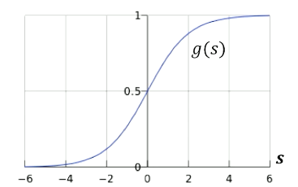
- Three linear models with different activation functions
- Using a sine activation function: it will be transformed to perceptron, a hard classification
4.1.4. Sigmoid is interpreted as probability
e.g., does a customer like a product based on feedback?
- Input: \(x\) a BoW or TF-IDF of a document that contains customer's feedback
- \(g(s)\) is the probability of whether a customer likes a product
- Cannot have hard prediction or classification here
- Sigmoid is the inverse of logit function (or the log-odds ratio)
4.1.5. Logistic regression model
- Expanding equation and replacing \(g(s)\) with linear combination of features
- Probabilistic model
- Uses MLE to optimize linear combination of features
- Use log-likelihood for better numerical stability
To find θ parameters, for \(n\) data points:
\begin{equation} P(y|x) = \begin{cases} \frac{1}{1+ \exp(-x\theta)} & y=1 \\ 1-\frac{1}{1+\exp(-x\theta)} = \frac{\exp(-x\theta)}{1+\exp(-x\theta)} & y=0 \end{cases} \end{equation}
4.1.6. The gradient of \(l(\theta)\)
\[ l(\theta) := \log \prod^n_{i=1} p(y_i, |x_i, \theta) \\ = \sum_i \theta^T x_i^T (y_i -1) - \log(1+\exp(-x_i \theta)) \] Gradient: \[ \frac{\partial l(\theta)}{\partial \theta} = \sum_i x_i^T (y_i-1) + x_i^T \frac{\exp(-x_i \theta)}{1+\exp(-x_i \theta)} \]
- Even when set to 0, there is no closed-form solution.
- Even though there is a global solution
- Unlike linear regression where there is a closed-form solution
- Hence, logistic regression is unconstrained, but
- Can optimize using iterative approach such as gradient descent
4.1.7. Gradient descent
- One way to solve unconstrained optimization problem is gradient descent
- Given initial guess, we iteratively refine the guess by taking the direction of the negative gradient
- Analogous to going down the hill by taking steepest direction at each step
- Update rule \[ x_{k+1} = x_k - \eta_k \nabla f(x_k) \] \(\eta_k\) is the step size or learning rate
- Step taken should be small enough
4.1.8. Gradient ascent (concave) / descent (convex) algorithm
- Initialize parameter \(\theta_0\)
- Do: \[ \theta_{t+1} \leftarrow \theta^t + \eta \sum_i x_i^T (y_i-1) + x_i^T \frac{\exp(-x_i \theta)}{1+\exp(-x_i \theta)} \]
- while: \[ \parallel \theta^{t+1} - \theta^t \parallel > \epsilon \]
- ascent: maximize function
- descent: minimize
- Thus:
- Logical threshold = 0.5, i.e. predict 1 if \(g(s) \ge 0.5\)
4.1.9. Advantages and disadvantages of logistic regression
- Advantages:
- Simple
- No need to model prior or likelihood
- Provides probability output
- Works with datasets with few features
- Disadvantages:
- Needs to have discriminative model assumption
- Model needs to be optimized using numerical approach
- Might not work with complicated dataset
**
4.2. Support vector machine
- SVM is a large margin classifier
4.2.1. Linear separation
- Can have different separating lines, so which line is the best?
- Why is having bigger margin better?
- What θ maximizes margin?
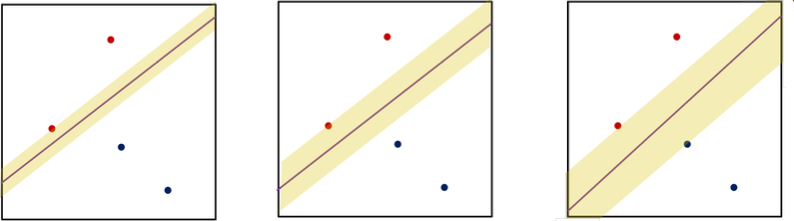
- All cases, error is zero and they are linear, so they are all good for generalization.
- SVM focuses on just one solution (compared to perceptron) and that's the maximum margin solution
- SVM maximizes margin and provides decision line with maximized margin, which is the most stable under perturbations of inputs
4.2.2. Finding θ that maximizes margin
- Objective function created by constructing linear combination of features.
- Solution (decision boundary) of the line \[ x \theta = 0 \]
- Let \(x_i\) be the nearest data point to the line/plane
- Decision boundary is thus \(x\theta + b = 0\)
- Below decision line: ≤ 0
- Above decision line: ≥ 0
- Scaling up / down θ thus allows you to set the nearest point to \(1\).
4.2.3. Length of margin
\[ \text{distance} = \frac{1}{\parallel \theta \parallel} |(x_i \theta - x \theta)| = \frac{1}{\parallel \theta \parallel}|(x_i \theta + b - x\theta -b)| \] where:
- \(x_i \theta + b\)
- my constraint \(\equiv |x_i \theta + b| = 1\)
- \(-x\theta - b\)
- a point on the decision line \(\equiv x\theta + b = 0\)
Therefore total margin is: \(\frac{2}{\parallel \theta \parallel}\) (since there are 2 points on each side of the decision line)
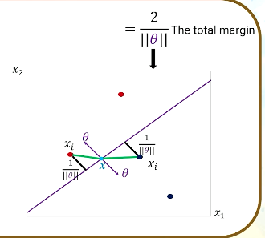
- θ is orthogonal to the decision line
4.2.4. Maximizing margin
- Maximize \(\frac{2}{\parallel \theta \parallel}\) in the objective function
- Subject to \(\min_{i=1,2,...,N} |x_i \theta + b| = 1\) which is the nearest neighbour, sign-agnostic for labels here, hence absolute.
- Hard to optimize this due to the "min" in the constraint (non-convex form)
- To get rid of the absolute value in the constraint, (and to get the correct prediction, predicted value must have same sign as actual) \[ \left|x_i \theta + b\right| = y_i(x_i \theta + b) \rightarrow \text{for correct classification} \\ \text{ if} \min |x_i \theta + b | = 1 \rightarrow \text{ it can be at least 1} \]
- Hence, \[ \max \frac{2}{\parallel \theta \parallel} \\ \text{subject to } y_i (x_i \theta + b) \ge 1 \text{ for } i=1,2,...,N \]
4.2.5. Geometric representation
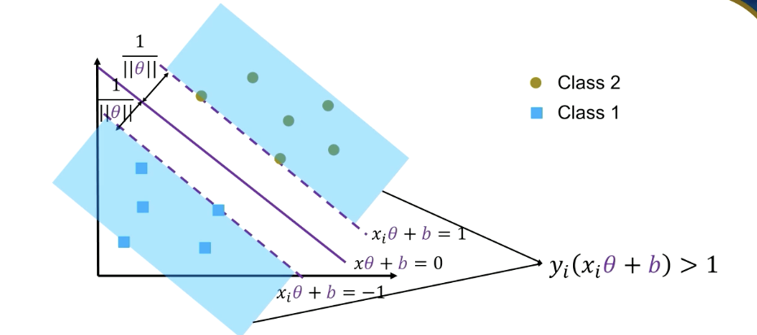
- Decision line
- \(x\theta + b = 0\)
- Margin line
- \(x \theta + b = 1\)
- Blue colors
- constraint (data points beyond margin line); beyond margin line the margin ≥ 1, correctly classified
- Converting problem
- Many ML libraries can solve minimization problems instead of maximization
- Hence, convert from: \[ \max(\frac{2}{\parallel \theta \parallel}) \\ \text{subject to } y_i (x_i \theta + b) \ge 1 \text{ for }i=1,2,...,N \]
- to: \[ \min(\frac{1}{2} \theta\theta^T) \\ \text{subject to } y_i (x_i \theta + b) \ge 1 \text{ for }i=1,2,...,N \]
4.2.6. Lagrange formulation (not in detail)
\[ \min(\frac{1}{2} \theta\theta^T) \\ \text{subject to } y_i (x_i \theta + b) -1 \ge 0 \\ \textit{L}(\theta, b, \alpha) = \frac{1}{2}\theta\theta^T - \sum^N_{i=1} \alpha_i (y_i(x_i \theta + b)-1) \] becomes: \[ \min \text{w.r.t. } \theta, b \text{ and } \max \text{w.r.t. each } \alpha_i \ge 0 \\ \nabla_\theta L(\theta, b, \alpha) = \theta - \sum^N_{i=1} \alpha_i y_i x_i = 0 \\ \nabla_b L(\theta, b, \alpha) = -sum^N{i=1} \alpha_i y_i = 0 \] under KKT conditions, where:
- \(\theta\)
- model parameter
- \(b\)
- bias term
- \(\alpha\)
- Lagrange multiplier
Need to convert primal form to dual form. Take gradient w.r.t. θ, b, set to 0. Calculate parametric value of θ and new constraints. Convert objective function to dual form. \[ \theta = \sum^N_{i=1} \alpha_i y_i x_i \text{ and } \sum^N_{i=1} \alpha_i y_i = 0 \\ L(\theta, b, \alpha) = \sum^N{i=1} \alpha_i - \frac{1}{2} \theta \theta^T \\ L(\theta, b, \alpha) = \sum^N_{i=1} \alpha_i - \frac{1}{2} \sum^N_{i=1} \sum^N_{j=1} y_i y_j \alpha_i \alpha_j x_i x_j^T \\ \max \text{ w.r.t. each } \alpha_i \ge 0 \text{ for }i=1,...,N \text{ and } \sum^N_{i=1} \alpha_i y_i = 0 \]
4.2.7. Usage
- Dual form good for binary classification, e.g. spam or not spam.
- Training
\[
\theta = \sum^N_{i=1} \alpha_i y_i x_i
\]
- No need to go over all data points
- \[ \rightarrow \theta = \sum_{x \in \text{ SV}} \alpha_i y_i x_i \]
- and for \(b\) pick any support vector, and calculate \(y_i (x_i \theta + b) = 1\)
- Testing
- For new point \(s\), compute: \[ s \theta + b = \sum_{x_i \in \text{ SV}} \alpha_i y_i x_i s^T + b \]
- Classify \(s\) as class 1 if positive, else classify as class 2.
4.2.8. From \(x\) to \(z\) space
- SVM can only be used when a linear decision line can be used
- Sometimes it may be possible to work around by moving from Cartesian to Polar space
- Not necessarily applicable to NLP since there are many many dimensions.
- Instead, kernel trick can be utilised in the dual form model, do feature engineering and handle millions of features.
4.2.9. Support vector machine
- Can do either
- Hard classification
- Soft classification
4.3. Perceptron
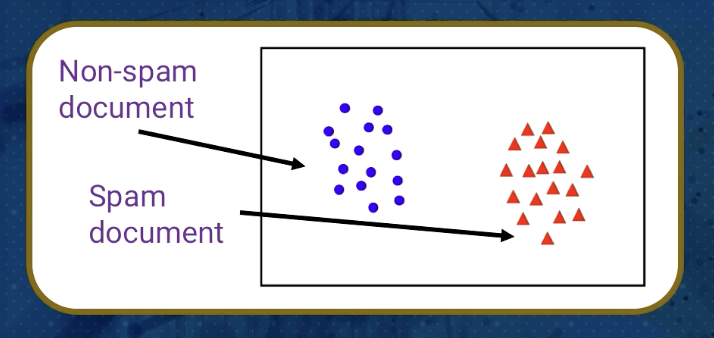
- Needs to be linearly separable to work
- Can be used for text classification, sentiment analysis
Given training data \((x_i, y_i)\) for \(i = 1,...,N, x_i \in \mathbb{R}^d \text{ and }y_i \in {-1,1}\) learn a classifier \(f(x)\) such that
\begin{equation} f(x_i) \begin{cases} \ge 0 & +1 & \text{Non-spam document} \\ \lt 0 & -1 & \text{Spam document} \end{cases} \end{equation}- i.e. \(y_i f(x_i) \gt 0\) for a correct classification
4.3.1. Linearly separable
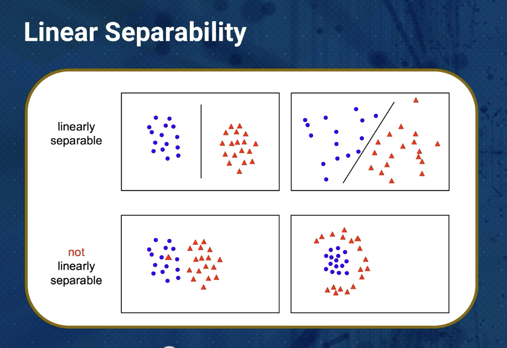
- The two labels must be separable by a straight line
- Perceptron uses linear classifier, as it uses linear combination of features
4.3.2. Linear classifier
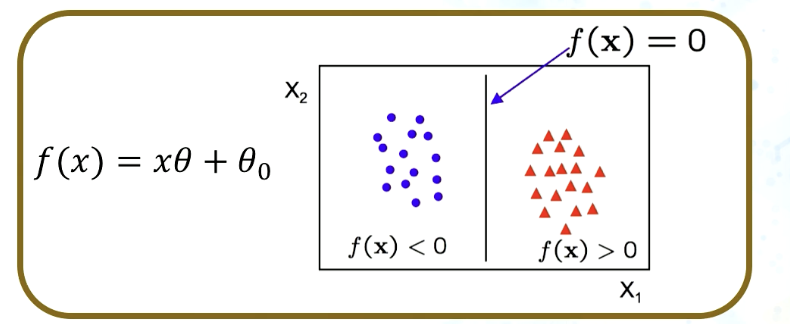 Linear classifier has the form \[ f(x) = x\theta + \theta_0 \]
- In 2D, the discriminant is a line
- \(\theta\) is the normal to the decision line
- \(\theta_0\), is the bias term
- \(\theta\) is known as the model parameter or the weight vector
- Decision boundary has \(d-1\) dimensions where \(d\) is the number of features
4.3.3. The Perceptron Classifier
- hard classifier
- Considering \(x\) is linearly separable
- \(y\) has 2 labels \(\{-1,1 \}\)
- \(f(x_i) = x_i \theta\), where bias is inside \(\theta\)
- How to separate data points with label 1 from those with -1 using a line?
- Perceptron classifier is a simple for-loop
- Goes inside every single data point to check whether it's classified correctly
4.3.4. Perceptron activation
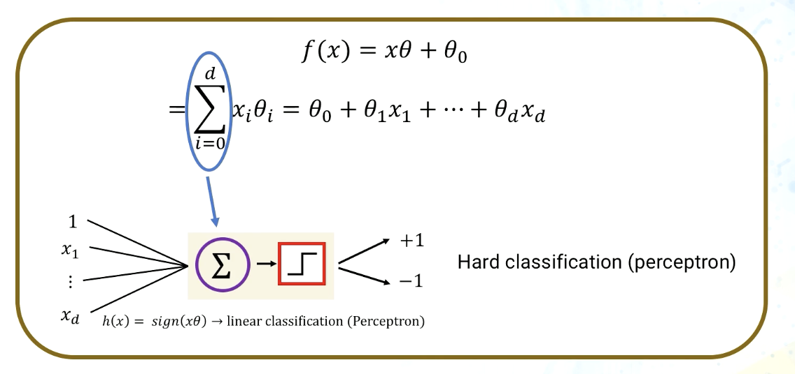
- LHS = number of lines = number of features
- output of linear combination of features, \(f(x)\) is real number,
- fed into activation function in red, which is +1 or -1
4.3.5. Advantages and disadvantages of Perceptron
- Advantages
- Very simple
- Fast, does not require any parameters
- Quick training to optimize parameters
- Disadvantages
- Works only for linearly separable data
- Does not provide unique decision boundary
5. Week 6: Embeddings/Dimensionality reduction
Singular Value Decomposition (SVD)
5.1. SVD and Co-occurrence Embeddings
5.1.1. Motivating example
Dimensionality reduction for text is to understand how they behave in 2D or 3D space.
- This helps to get better perspective of the data.
- High dimensionality data points happens on text and data problems due to many unique words.
5.1.2. Bag of words representation
- Has many unique words (dimensions) that leads to:
- overfitting
- more resources & time needed
- BoW generates a term-document matrix with many many features that's sparse
- Possible solution: dimension reduction
5.1.3. What is dimensionality reduction?
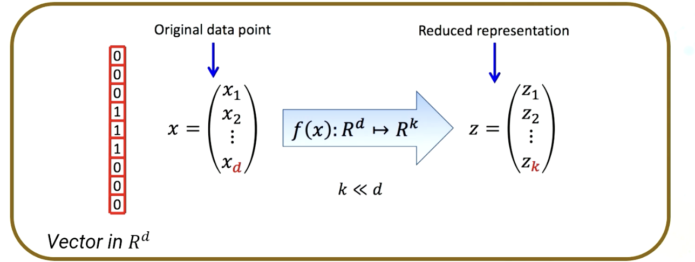
- Dimensionality reduction is the process of reducing random variables under consideration
- Possible approaches:
- Combine, transform or select variables
- With linear or non-linear operations
- New space has lower dimensions than previous space
5.1.4. Intuition (of PCA)
- Approximate a \(D\) -dimensional dataset using fewer dimensions
- By rotating the axes into a new space
- Highest order dimension captures the most variance in the original dataset
- Next dimension captures the next most variance, etc.
- PCA uses eigendecomposition of covariance of dataset to maximize variance
- Eigenvector corresponding to the highest eigenvalue is the new dimension that maximises the variance the most
- Hope of PCA is that a dimension that explains variance the most would explain data better and it's easier to separate and distinguish labels when data points are spread out because of high variance
5.1.5. Singular value decomposition
For a matrix \(X_{n \times d}\) where:
- n
- number of instances
- d
- dimension
\[ X = U \Sigma V^T \]
- U, Σ, V
- all unitary matrices
- m columns
- represent a dimension in a new latent space s.t. \(m\) column vectors are orthogonal to each other, and ordered by the amount of variance in the dataset in each dimension. \(m\) has maximum of \(d\) dimensions
- \(U_{n \times m}\)
- unitary matrix → \(UU^T = I\)
- \(\Sigma_{m \times m}\)
- diagonal matrix of singular values of \(X\)
- \(V_{m \times d}\)
- unitary matrix \(\rightarrow VV^T = I\)
5.1.6. Co-occurrence matrices
Instead of matrix.
Each matrix for one value of context length.
- Meaning of a word is defined by the words in its surroundings
- Define a context window as the number of words appearing around a centre word
- Create a co-occurrence matrix:
- Go through each central word-context pair in corpus (context window length is commonly in \([1,5]\))
- In each iteration, update the row of the count matrix (of central word) by adding +1 in the columns for the context words
- Repeat last step many times

5.1.7. SVD on co-occurrence matrices
- For corpus with vocabulary \(V\) of size \(d\), co-occurrence matrix has size \(d \times d\)
- Size of co-occurrence matrix increases with vocabulary
- Instead of keeping all dimensions, can instead use truncated SVD to keep only to \(k\) singular values
- e.g. \(k=300\)
- Result is a least-square approximation to the original co-occurrence matrix \(X\) 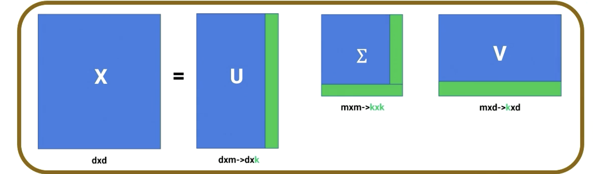
- Single value is directly related to the new dimension that maximizes co-variance
5.1.8. Dense word embeddings
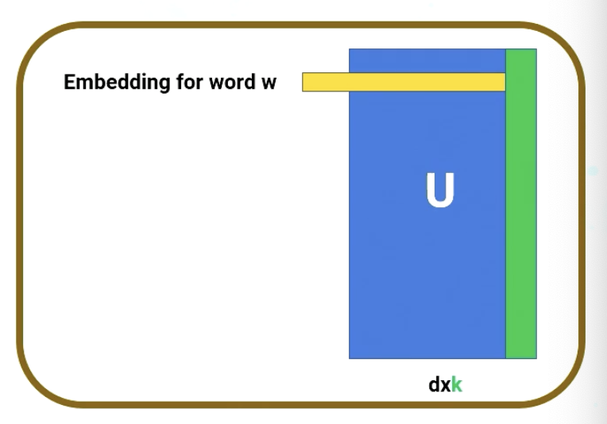
- Each row of \(U\) is a \(k\) -dimensional representation of each word \(w\) in the corpus that best preserves variance
- Generally, keep top \(k \in [50, 500]\) dimensions.
- Produces dense vectors for word representations, while also considering the word contexts that carry meaning
5.1.9. Advantages of dense word embeddings
- Denoising: low-order dimensions may represent unimportant information; higher-order dimensions keep only important information
- Truncation may help models generalize better to unseen data
- Having smaller number of dimensions may make it easier for classifiers to properly weigh the dimensions
- Dense models may do better at capturing higher-order co-occurrence
- Dense vectors work better in word similarity
- Example of word-similarity method is cosine similarity between two word-embeddings \(w, v\): \[ \text{cosine} (\vec{v}, \vec{w}) = \frac{\vec{v}\cdot \vec{w}}{|\vec{v}| |\vec{w}|} = \frac{\sum^N_{i=1}v_i w_i}{\sqrt{\sum^N_{i=1} v_i^2} \sqrt{\sum^N_{i=1} w_i^2}} \]
5.2. GloVe
Global Vectors.
5.2.1. Definitions
- Global
- global statistics of corpus
- Vectors
- representation of words
5.2.2. GloVe model
- Glove uses statistics of word occurrences in a corpus as the primary source of information.
- Combines 2 widely adopted approaches for training word vectors:
- Global matrix factorization
- Window-based methods
- Uses Co-occurrence matrix as a starting point
5.2.3. Extending the co-occurrence matrix
- Definition
- For corpus of vocabulary \(V\) of size \(d\), the co-occurrence matrix is a symmetrical matrix of size \(d\times d\)
- \(X_{ij}\)
- number of times word \(j\) occurs in the context of word \(i\) after defining window size
- \(X_i = \sum_k X_{ik}\)
- summation over all the words which occur in the context of word \(i\)
- \(P_{ij} = \frac{X_{ij}}{X_i}\)
- the co-occurrence probability where \(_{ij}\) is the probability of word \(j\) occurring in the context of word \(i\)
5.2.4. Example
It was the best of times, it was the worst of times. (Context window=2)
i = "it", j = "was"
- \(X_{i=0, j=1} = 2\)
- \(X_{i=0} = 6\)
- \(P{i=0, j=1} = 2/6 = 0.33\)
5.2.5. GloVe cost function
- GloVe suggests finding the relationship between 2 words in terms of probability, rather than occurrence counts
- GloVe looks to find vectors \(w_i\) and \(w_j\) such that \[ w_i^T w_j = \log(P_{ij}) = \log(\frac{X_{ij}}{X_i}) \]
- \(\log(X_i)\) is independent of word \(j\) and can be represented as a bias \(b_i\)
- Adding a bias term to restore the symmetry for vector \(w_j\) we get: \[ w_i^T w_j + b_i + b_j = \log(X_{ij}) \]
A weighted least squares is used as a cost function for the GloVe model: \[ J = \sum_{ij} f(X_{ij})(w_i^T w_j + b_i + b_j - log(X_{ij}))^2 \] with:
\begin{equation} f(x) = \begin{cases} (\frac{x}{x_{\text{max}}})^4 & \text{ if }x < x_{\text{max}} \\ 1 & \text{otherwise} \end{cases} \end{equation}- In original paper, \(\alpha = \frac{3}{4}\) gave the best performance
5.2.6. GloVe word vectors
- Trained in batches of the training sample with optimizer to minimize the cost function and hence generate word and context vectors for each word
- Each word in the corpus is represented bya dense vector of fixed size length
- Word vectors obtained by GloVe showcase the meaning that was captured in these vector representations through similarity and linear structure
- Using Euclidean distance or cosine similarity between word vectors represents linguistic or semantic similarity of the corresponding words.
- E.g. "summer" is most similar to "winter", "spring", "autumn"
5.2.7. GloVe conserves linear relationships
- Word vectors by GloVe conserve linear substructures
- Vector differences capture as much as possible the meaning specified by two words
- E.g.: the underlying concept that differentiates man and woman, i.e. gender, may be equivalently specified by other word pairs such as king and queen: \[ w_{\text{man}} - w_{\text{woman}} = w_{\text{king}} - w_{\text{queen}} \]
6. Week 8: Neural Networks and Word2Vec
6.1. Neural Networks
M6T1
6.1.1. Inspiration from biological neurons
Neurons: core components of the brain and nervous system. Consists of:
- Dendrites
- collect information from other neurons
- Axon
- generates outgoing spikes
6.1.2. Logistic regression block review
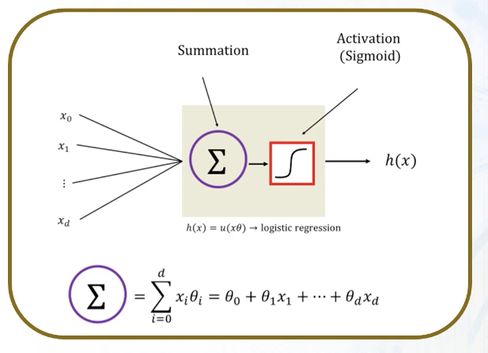
- Summation part is a linear combination of features or dimensions - i.e. unique words in the document term matrix
- Receives a data point as an input, which can be multi-dimensional
- Linearly combines them using model parameters, shown as θ .
- Linear combination of features, the output of the output of summation function, captures the linear relationship between input and output
- Linear function may not be sufficient to capture the non-linear and complex relationship between input data points and their output.
- Hence, activation function is needed, which is fed by output of summation term.
- Typically chosen to be a non-linear function, which helps the network understand and learn the complex relationship between input and output.
- Well-known activation functions:
- Linear unit
- does not change the output of the summation function. \(z\)
- Threshold/Sign
- used for hard classification algorithm. Positive or negative output for binary classification. Decision line is zero. \(\text{sgn}(z)\)
- Sigmoid
- used to scale output between \([0,1]\). Commonly used for classification problems. If used with 1 learning block, it's a logistic regression algorithm with soft classification. \(\frac{1}{1+\exp(-z)}\)
- ReLu
- Rectified linear unit. Commonly used in deep learning methods because of friendly optimization, back propagation and fast training of predictive model. \(\max(0,z)\)
- Tangent hyperbolic (Tanh) unit
- Scales a real value from -1 to +1. Captures negative values (vs. sigmoid unit), which just scales between \([0,1]\). \(\tanh(z)\)
6.1.3. Connecting blocks to create neural networks
Recap:
- a block received a data point or document having features, and linearly combines them in a summation function, that is then fed to activation function \(h(x)\).
- New neuron or feature would help network and original features learn more complex relationship between inputs and outputs.
- Artificial neural network can solve both regression and classification problems.
- Fully connected network: each neuron needs to be connected to all the learning blocks.
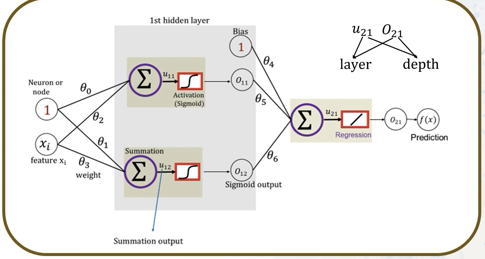
- 1
- Bias value
- \(x_i\)
- Feature
- \(\theta\)
- weight
- \(\mu_{21}\)
- summation output for layer 2, depth 1
- last activation function defines what model / problem we're trying to solve (regression or classification)